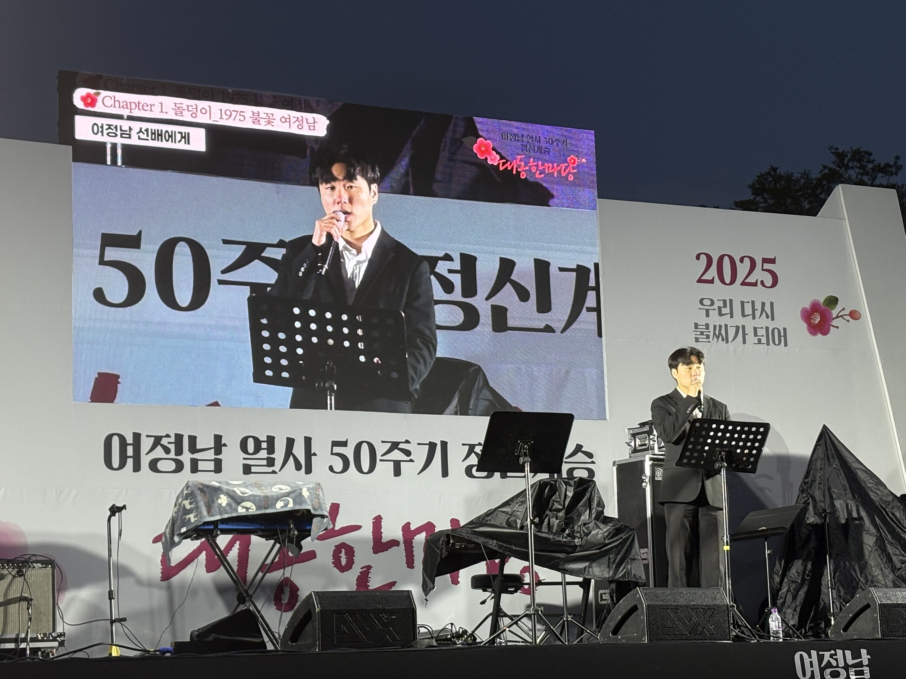

여정남 열사 50주기 정신계승 사진·수기 전시

여정남 열사 서거 50주기를 맞이하여 기존의 추모식에서 더 나아가 ‘내가 경험한 민주주의의 일상’이라는 주제로 사진 및 수기 전시를 진행하였습니다.
우수작을 선정하고 50주기 기념행사에서 편지와 시를 낭독하는 시간을 가졌습니다. 민주주의를 위해 희생하신 선배님들의 얼과 정신을 계승하며, 민주주의 수호의 숙명을 가진 정치학도로서 더 나은 민주주의를 위한 숙의의 시간을 가질 수 있었습니다.
